Introduction
This is an attempt to explore a Starbucks offers dataset, analyzed by some Medium users (Syuen Loh; Saleh Alitr). The aim for this stage of my work on this project, illustrated by this notebook, is to find some interesting questions that could be answered by the data at hand that have not been explored in the work of the aforementioned authors. In the later stages, I will aim to answer these questions.
#importing necessary libraries
import pandas as pd
import numpy as np
import seaborn as sns
import random
#setting up the style and the color schema to be used
plt.style.use('seaborn')
my_colors = ["tab:blue", "tab:orange", "tab:olive", "tab:pink",
"tab:cyan", "tab:grey", "tab:purple", "tab:brown",
"gold", "teal"]
Dataset Exploration 1. Exploring existing tables
Exploring Users
##reading the profile table
path = "https://raw.githubusercontent.com/salitr/starbucks_offers_analysis/master/profile.json"
df_users = pd.read_json(path, lines = True)
df_users.head()
| gender | age | id | became_member_on | income | |
|---|---|---|---|---|---|
| 0 | None | 118 | 68be06ca386d4c31939f3a4f0e3dd783 | 20170212 | NaN |
| 1 | F | 55 | 0610b486422d4921ae7d2bf64640c50b | 20170715 | 112000.0 |
| 2 | None | 118 | 38fe809add3b4fcf9315a9694bb96ff5 | 20180712 | NaN |
| 3 | F | 75 | 78afa995795e4d85b5d9ceeca43f5fef | 20170509 | 100000.0 |
| 4 | None | 118 | a03223e636434f42ac4c3df47e8bac43 | 20170804 | NaN |
#as some rows contain bad data (no gender and age 118), we need to drop rows with NaN
df_users = df_users.dropna(how = "any")
df_users
| gender | age | id | became_member_on | income | |
|---|---|---|---|---|---|
| 1 | F | 55 | 0610b486422d4921ae7d2bf64640c50b | 20170715 | 112000.0 |
| 3 | F | 75 | 78afa995795e4d85b5d9ceeca43f5fef | 20170509 | 100000.0 |
| 5 | M | 68 | e2127556f4f64592b11af22de27a7932 | 20180426 | 70000.0 |
| 8 | M | 65 | 389bc3fa690240e798340f5a15918d5c | 20180209 | 53000.0 |
| 12 | M | 58 | 2eeac8d8feae4a8cad5a6af0499a211d | 20171111 | 51000.0 |
| ... | ... | ... | ... | ... | ... |
| 16995 | F | 45 | 6d5f3a774f3d4714ab0c092238f3a1d7 | 20180604 | 54000.0 |
| 16996 | M | 61 | 2cb4f97358b841b9a9773a7aa05a9d77 | 20180713 | 72000.0 |
| 16997 | M | 49 | 01d26f638c274aa0b965d24cefe3183f | 20170126 | 73000.0 |
| 16998 | F | 83 | 9dc1421481194dcd9400aec7c9ae6366 | 20160307 | 50000.0 |
| 16999 | F | 62 | e4052622e5ba45a8b96b59aba68cf068 | 20170722 | 82000.0 |
14825 rows × 5 columns
#exploring the gender distribution of users: grouping by gender and vizualizing
#the number of users identifying as certain gender, along with the proportion
#of a certain group
genders = (df_users.groupby("gender").size() / df_users.shape[0]).values
ax = df_users.groupby("gender").size().plot.barh(color = my_colors[:len(genders)])
ax.set_xlim(0,10000)
for n, patch in enumerate(ax.patches):
ax.text(patch.get_width() + 30, patch.get_y() + 0.21, str(round(genders[n]*100, 2))+"%",
fontsize = 10, color = 'dimgrey')
plt.title("Gender of users")
plt.tight_layout()
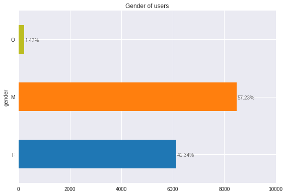
#exploring the age distribution of the
df_users.age.describe()
count 14825.000000
mean 54.393524
std 17.383705
min 18.000000
25% 42.000000
50% 55.000000
75% 66.000000
max 101.000000
Name: age, dtype: float64
#exploring the age groups: dividing the users in 7 age groups
df_users.loc[:, "agegroup"] = pd.cut(df_users.age, [18, 30, 40, 50, 60, 70, 80, 90])
agegroup_proportion = (df_users.groupby("agegroup").size() / df_users.shape[0]).values
ax = df_users.groupby("agegroup").size().plot.bar(color = my_colors[:len(agegroup_proportion)])
for n, patch in enumerate(ax.patches):
ax.text(patch.get_x(), patch.get_height() + 60, str(round(agegroup_proportion[n]*100, 2))+"%",
fontsize = 10, color = 'dimgrey')
labs = ax.get_xticklabels()
texts = []
for lab in labs:
str_to_modify = lab.get_text()
text = str_to_modify[1:-1]
text = "-".join(text.split(", "))
texts.append(text)
ax.set_xticklabels(texts)
plt.title("Users by age")
ax.set_xlabel("")
plt.tight_layout()
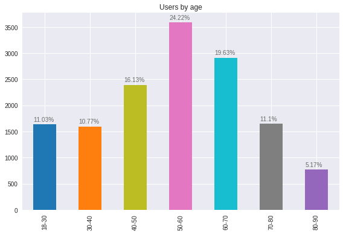
#converting the time of join column to datetime and exploring the timeframe of joining by year
df_users["became_member_dt"] = pd.to_datetime(df_users.became_member_on.apply(lambda x: str(x)[:4] + "-" + str(x)[4:6] + "-" + str(x)[6:]))
year_propotion = (df_users.groupby(df_users.became_member_dt.dt.year).size() / df_users.shape[0]).values
year_propotion
array([0.01848229, 0.0446543 , 0.10772344, 0.20397976, 0.37767285,
0.24748735])
ax = df_users.groupby(df_users.became_member_dt.dt.year).size().plot.bar(color = my_colors[:len(year_propotion)])
for n, patch in enumerate(ax.patches):
ax.text(patch.get_x()+0.05, patch.get_height() + 60, str(round(year_propotion[n]*100, 2))+"%",
fontsize = 10, color = 'dimgrey')
ax.set_xlabel("")
plt.title("Users by year of join")
plt.tight_layout()
plt.show()
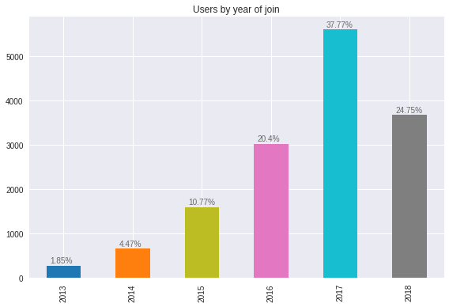
#exploring the income of users
sns.distplot(df_users.income, bins = 10).set_title("Income of users")
plt.axvline(np.mean(df_users.income), color = "tab:orange");
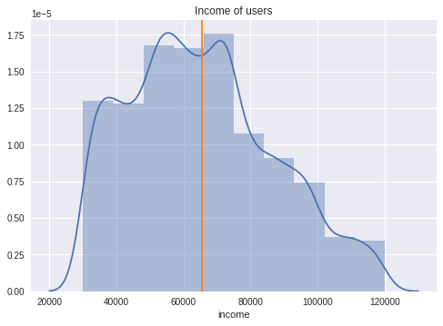
Observations: The dataset contains 15% more users identified as men than women, around 1% of users specified their gender as "other". Average income is around 60k a year. More than 80% of users have joined the platform from 2016 to 2018. Around 60% of users are in their 40s to 60s.
Exploring Events
#reading the events table and checking the data
path_events = "https://raw.githubusercontent.com/salitr/starbucks_offers_analysis/master/transcript.json"
df_events = pd.read_json(path_events, lines = True)
df_events.describe()
| time | |
|---|---|
| count | 306534.000000 |
| mean | 366.382940 |
| std | 200.326314 |
| min | 0.000000 |
| 25% | 186.000000 |
| 50% | 408.000000 |
| 75% | 528.000000 |
| max | 714.000000 |
df_events.info()
<class 'pandas.core.frame.DataFrame'>
RangeIndex: 306534 entries, 0 to 306533
Data columns (total 4 columns):
# Column Non-Null Count Dtype
--- ------ -------------- -----
0 person 306534 non-null object
1 event 306534 non-null object
2 value 306534 non-null object
3 time 306534 non-null int64
dtypes: int64(1), object(3)
memory usage: 9.4+ MB
#exploring types of events
df_events.event.value_counts()
transaction 138953
offer received 76277
offer viewed 57725
offer completed 33579
Name: event, dtype: int64
#there are two types of events: transactions and offers, each appears to have
#a "time" value, which, according to the explanation of the dataset, is the
#number of hours since the start of the offer
df_events.loc[df_events.event == 'transaction']
| person | event | value | time | |
|---|---|---|---|---|
| 12654 | 02c083884c7d45b39cc68e1314fec56c | transaction | {'amount': 0.8300000000000001} | 0 |
| 12657 | 9fa9ae8f57894cc9a3b8a9bbe0fc1b2f | transaction | {'amount': 34.56} | 0 |
| 12659 | 54890f68699049c2a04d415abc25e717 | transaction | {'amount': 13.23} | 0 |
| 12670 | b2f1cd155b864803ad8334cdf13c4bd2 | transaction | {'amount': 19.51} | 0 |
| 12671 | fe97aa22dd3e48c8b143116a8403dd52 | transaction | {'amount': 18.97} | 0 |
| ... | ... | ... | ... | ... |
| 306529 | b3a1272bc9904337b331bf348c3e8c17 | transaction | {'amount': 1.5899999999999999} | 714 |
| 306530 | 68213b08d99a4ae1b0dcb72aebd9aa35 | transaction | {'amount': 9.53} | 714 |
| 306531 | a00058cf10334a308c68e7631c529907 | transaction | {'amount': 3.61} | 714 |
| 306532 | 76ddbd6576844afe811f1a3c0fbb5bec | transaction | {'amount': 3.5300000000000002} | 714 |
| 306533 | c02b10e8752c4d8e9b73f918558531f7 | transaction | {'amount': 4.05} | 714 |
138953 rows × 4 columns
#plotting the average transaction time since the start of the offer
ax = df_events.loc[df_events.event == 'transaction', 'time'].plot.hist(color = random.choice(my_colors))
ax.set_ylabel("Number of transactions")
ax.set_xlabel("Hours")
plt.title("Transactions by hours since the start of the offer")
ax.set_ylim(0, 18000)
plt.tight_layout()
plt.show()
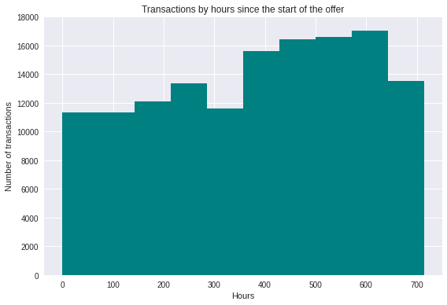
#plotting the duration of time since the beginning of the offer and an offer-related event
offer_events = df_events.loc[df_events.event != 'transaction']
ax = sns.boxplot(offer_events.time, offer_events.event, palette = sns.color_palette(my_colors[3:6]))
ax.set_ylabel("Offer event")
ax.set_xlabel("Time, hours")
plt.title("Offer-related events by time since the start of the offer")
plt.show()
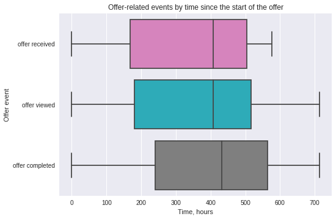
Observations: Clients appear to be receiving offers at different times - not only when the offer starts. Therefore, even though more transactions appear to be made in the later stage since the offer started, but there is a need to look at the time between an offer was received/viewed and the time a transaction was made.
Exploring Offers
#reading the offers table
path_offers = "https://raw.githubusercontent.com/salitr/starbucks_offers_analysis/master/portfolio.json"
df_offers = pd.read_json(path_offers, lines = True)
df_offers
| reward | channels | difficulty | duration | offer_type | id | |
|---|---|---|---|---|---|---|
| 0 | 10 | [email, mobile, social] | 10 | 7 | bogo | ae264e3637204a6fb9bb56bc8210ddfd |
| 1 | 10 | [web, email, mobile, social] | 10 | 5 | bogo | 4d5c57ea9a6940dd891ad53e9dbe8da0 |
| 2 | 0 | [web, email, mobile] | 0 | 4 | informational | 3f207df678b143eea3cee63160fa8bed |
| 3 | 5 | [web, email, mobile] | 5 | 7 | bogo | 9b98b8c7a33c4b65b9aebfe6a799e6d9 |
| 4 | 5 | [web, email] | 20 | 10 | discount | 0b1e1539f2cc45b7b9fa7c272da2e1d7 |
| 5 | 3 | [web, email, mobile, social] | 7 | 7 | discount | 2298d6c36e964ae4a3e7e9706d1fb8c2 |
| 6 | 2 | [web, email, mobile, social] | 10 | 10 | discount | fafdcd668e3743c1bb461111dcafc2a4 |
| 7 | 0 | [email, mobile, social] | 0 | 3 | informational | 5a8bc65990b245e5a138643cd4eb9837 |
| 8 | 5 | [web, email, mobile, social] | 5 | 5 | bogo | f19421c1d4aa40978ebb69ca19b0e20d |
| 9 | 2 | [web, email, mobile] | 10 | 7 | discount | 2906b810c7d4411798c6938adc9daaa5 |
#according to the description of the dataset, duration refers to days since the beginning of the offer.
#it might be helpful to convert it to hours as the events table records events in hours
#moreover, it might be interesting to know if a platform of distribtution affects the success of a campaign
#we will need to engineer separate columns for each platform
#converting days to hours
df_offers["duration_hours"] = df_offers.duration * 24
df_offers = df_offers.drop("duration", axis = 1)
#creating separate columns for offers
df_offers['email'] = df_offers.channels.apply(lambda x:1 if 'email' in x else 0)
df_offers['web'] = df_offers.channels.apply(lambda x:1 if 'web' in x else 0)
df_offers['mobile'] = df_offers.channels.apply(lambda x:1 if 'mobile' in x else 0)
df_offers['social'] = df_offers.channels.apply(lambda x:1 if 'social' in x else 0)
df_offers = df_offers.drop("channels", axis = 1)
#cleaned offers table
df_offers
| reward | difficulty | offer_type | id | duration_hours | web | mobile | social | ||
|---|---|---|---|---|---|---|---|---|---|
| 0 | 10 | 10 | bogo | ae264e3637204a6fb9bb56bc8210ddfd | 168 | 1 | 0 | 1 | 1 |
| 1 | 10 | 10 | bogo | 4d5c57ea9a6940dd891ad53e9dbe8da0 | 120 | 1 | 1 | 1 | 1 |
| 2 | 0 | 0 | informational | 3f207df678b143eea3cee63160fa8bed | 96 | 1 | 1 | 1 | 0 |
| 3 | 5 | 5 | bogo | 9b98b8c7a33c4b65b9aebfe6a799e6d9 | 168 | 1 | 1 | 1 | 0 |
| 4 | 5 | 20 | discount | 0b1e1539f2cc45b7b9fa7c272da2e1d7 | 240 | 1 | 1 | 0 | 0 |
| 5 | 3 | 7 | discount | 2298d6c36e964ae4a3e7e9706d1fb8c2 | 168 | 1 | 1 | 1 | 1 |
| 6 | 2 | 10 | discount | fafdcd668e3743c1bb461111dcafc2a4 | 240 | 1 | 1 | 1 | 1 |
| 7 | 0 | 0 | informational | 5a8bc65990b245e5a138643cd4eb9837 | 72 | 1 | 0 | 1 | 1 |
| 8 | 5 | 5 | bogo | f19421c1d4aa40978ebb69ca19b0e20d | 120 | 1 | 1 | 1 | 1 |
| 9 | 2 | 10 | discount | 2906b810c7d4411798c6938adc9daaa5 | 168 | 1 | 1 | 1 | 0 |
#exploring duration by hours
fig, ax = plt.subplots()
ax.bar(df_offers.index, df_offers.duration_hours, color = my_colors[:df_offers.shape[0]])
ax.set_xticks([x for x in range(df_offers.shape[0])])
ax.set_title("Offers by duration (hours)")
plt.show()
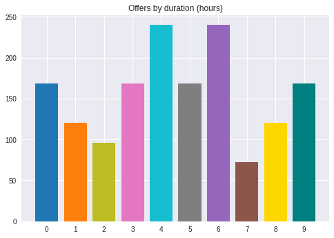
df_offers.duration_hours.describe()
count 10.000000
mean 156.000000
std 55.713553
min 72.000000
25% 120.000000
50% 168.000000
75% 168.000000
max 240.000000
Name: duration_hours, dtype: float64
#exploring duration by offer type
sns.boxplot(x=df_offers.duration_hours, y=df_offers.offer_type,
palette = sns.color_palette(my_colors[:3])).set_title("Duration of offers by type");
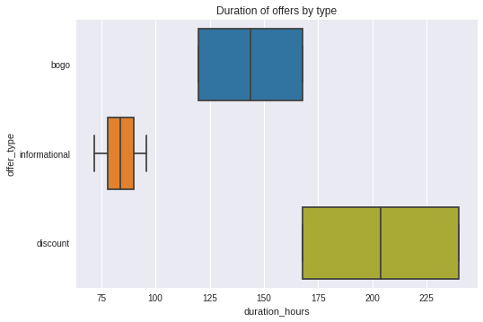
#exploring used platforms depending on the offer type
grouped = df_offers.groupby("offer_type").sum().loc[:, ["email", "web", "mobile", "social"]]
grouped.plot.bar(color = my_colors[:4])
plt.title("Platforms by offer type");
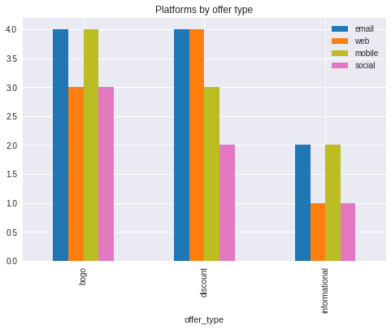
df_offers.groupby("reward").count()
| difficulty | offer_type | id | duration_hours | web | mobile | social | ||
|---|---|---|---|---|---|---|---|---|
| reward | ||||||||
| 0 | 2 | 2 | 2 | 2 | 2 | 2 | 2 | 2 |
| 2 | 2 | 2 | 2 | 2 | 2 | 2 | 2 | 2 |
| 3 | 1 | 1 | 1 | 1 | 1 | 1 | 1 | 1 |
| 5 | 3 | 3 | 3 | 3 | 3 | 3 | 3 | 3 |
| 10 | 2 | 2 | 2 | 2 | 2 | 2 | 2 | 2 |
For 3 types of offers (BuyOneGetOne, Discount, Informational), no particular tendency exists by platform. Discount offers tend to be longer, and information offers shorter. As no offer can be longer than 240 hours, while for transactions it is 700, there is a need to distinguish between offer-related and non-offer-related transactions. There also appears to be no particular pattern between the amount of rewards (stars received in the event of completion) and the type of offer, so this could be an interesting metric to explore.
Dataset Exploration 2: Exploring merged tables
#joining users and events tables (inner join)
users_events = pd.merge(df_users, df_events, left_on = df_users.id, right_on = df_events.person)
users_events = users_events.drop("key_0", axis = 1)
users_events
| gender | age | id | became_member_on | income | agegroup | became_member_dt | person | event | value | time | |
|---|---|---|---|---|---|---|---|---|---|---|---|
| 0 | F | 55 | 0610b486422d4921ae7d2bf64640c50b | 20170715 | 112000.0 | (50, 60] | 2017-07-15 | 0610b486422d4921ae7d2bf64640c50b | transaction | {'amount': 21.51} | 18 |
| 1 | F | 55 | 0610b486422d4921ae7d2bf64640c50b | 20170715 | 112000.0 | (50, 60] | 2017-07-15 | 0610b486422d4921ae7d2bf64640c50b | transaction | {'amount': 32.28} | 144 |
| 2 | F | 55 | 0610b486422d4921ae7d2bf64640c50b | 20170715 | 112000.0 | (50, 60] | 2017-07-15 | 0610b486422d4921ae7d2bf64640c50b | offer received | {'offer id': '9b98b8c7a33c4b65b9aebfe6a799e6d9'} | 408 |
| 3 | F | 55 | 0610b486422d4921ae7d2bf64640c50b | 20170715 | 112000.0 | (50, 60] | 2017-07-15 | 0610b486422d4921ae7d2bf64640c50b | offer received | {'offer id': '3f207df678b143eea3cee63160fa8bed'} | 504 |
| 4 | F | 55 | 0610b486422d4921ae7d2bf64640c50b | 20170715 | 112000.0 | (50, 60] | 2017-07-15 | 0610b486422d4921ae7d2bf64640c50b | transaction | {'amount': 23.22} | 528 |
| ... | ... | ... | ... | ... | ... | ... | ... | ... | ... | ... | ... |
| 272757 | F | 62 | e4052622e5ba45a8b96b59aba68cf068 | 20170722 | 82000.0 | (60, 70] | 2017-07-22 | e4052622e5ba45a8b96b59aba68cf068 | offer completed | {'offer_id': 'f19421c1d4aa40978ebb69ca19b0e20d... | 480 |
| 272758 | F | 62 | e4052622e5ba45a8b96b59aba68cf068 | 20170722 | 82000.0 | (60, 70] | 2017-07-22 | e4052622e5ba45a8b96b59aba68cf068 | transaction | {'amount': 19.47} | 486 |
| 272759 | F | 62 | e4052622e5ba45a8b96b59aba68cf068 | 20170722 | 82000.0 | (60, 70] | 2017-07-22 | e4052622e5ba45a8b96b59aba68cf068 | offer viewed | {'offer id': 'f19421c1d4aa40978ebb69ca19b0e20d'} | 546 |
| 272760 | F | 62 | e4052622e5ba45a8b96b59aba68cf068 | 20170722 | 82000.0 | (60, 70] | 2017-07-22 | e4052622e5ba45a8b96b59aba68cf068 | offer received | {'offer id': '3f207df678b143eea3cee63160fa8bed'} | 576 |
| 272761 | F | 62 | e4052622e5ba45a8b96b59aba68cf068 | 20170722 | 82000.0 | (60, 70] | 2017-07-22 | e4052622e5ba45a8b96b59aba68cf068 | transaction | {'amount': 24.71} | 690 |
272762 rows × 11 columns
#creating a table of transactons per user
transactions = users_events.loc[users_events.event == 'transaction'].copy()
transactions = transactions.loc[:,["person", "value", "time"]].copy()
#creating a separate column for the amount of transaction, dropping value column
transactions["amount"] = transactions.value.apply(lambda x: x['amount'])
transactions = transactions.drop("value", axis = 1)
transactions
| person | time | amount | |
|---|---|---|---|
| 0 | 0610b486422d4921ae7d2bf64640c50b | 18 | 21.51 |
| 1 | 0610b486422d4921ae7d2bf64640c50b | 144 | 32.28 |
| 4 | 0610b486422d4921ae7d2bf64640c50b | 528 | 23.22 |
| 8 | 78afa995795e4d85b5d9ceeca43f5fef | 132 | 19.89 |
| 10 | 78afa995795e4d85b5d9ceeca43f5fef | 144 | 17.78 |
| ... | ... | ... | ... |
| 272752 | e4052622e5ba45a8b96b59aba68cf068 | 84 | 25.19 |
| 272753 | e4052622e5ba45a8b96b59aba68cf068 | 96 | 21.53 |
| 272756 | e4052622e5ba45a8b96b59aba68cf068 | 480 | 30.57 |
| 272758 | e4052622e5ba45a8b96b59aba68cf068 | 486 | 19.47 |
| 272761 | e4052622e5ba45a8b96b59aba68cf068 | 690 | 24.71 |
123957 rows × 3 columns
#descriptive statistics on transactions per user
#number of transactions
transactions_pu = pd.DataFrame(transactions.groupby("person").size())
transactions_pu.describe()
| 0 | |
|---|---|
| count | 14492.000000 |
| mean | 8.553478 |
| std | 5.082696 |
| min | 1.000000 |
| 25% | 5.000000 |
| 50% | 7.000000 |
| 75% | 11.000000 |
| max | 36.000000 |
#average time since the offer and sum to spend
amount_pu = transactions.groupby("person").mean()
amount_pu.describe()
| time | amount | |
|---|---|---|
| count | 14492.000000 | 14492.000000 |
| mean | 389.614012 | 15.252287 |
| std | 89.168780 | 16.543371 |
| min | 12.000000 | 0.150000 |
| 25% | 331.500000 | 3.890833 |
| 50% | 386.000000 | 14.311214 |
| 75% | 442.200000 | 21.467625 |
| max | 714.000000 | 451.470000 |
#visualizing the metrics related to transactions per user
ax1 = plt.subplot(1,3,1)
sns.distplot(transactions_pu.values, color = random.choice(my_colors)).set_title("N Transactions")
ax1.axvline(np.mean(transactions_pu[0]), color = "tab:orange")
ax2 = plt.subplot(1,3,2)
sns.distplot(amount_pu.time, color = random.choice(my_colors))
ax2.axvline(np.mean(amount_pu.time), color = "tab:orange")
ax2.set_xlabel("")
ax2.set_title("Avg Time")
ax3 = plt.subplot(1,3,3)
sns.distplot(amount_pu.amount, color = random.choice(my_colors)).set_title("Avg Sum Spent")
ax3.axvline(np.mean(amount_pu.amount), color = "tab:orange")
ax3.set_xlabel("")
plt.tight_layout()
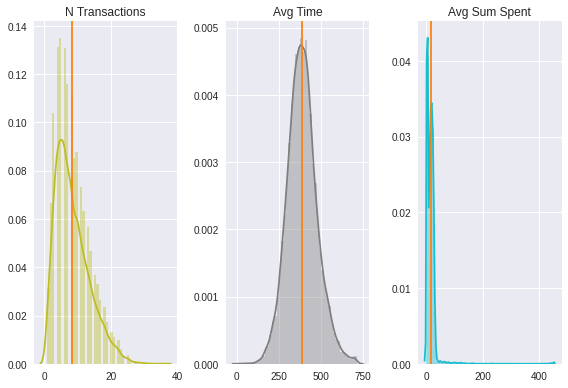
Observation: It appears that there are outliers regarding average sum spent on an order, it might be useful to disregard them during analysis. On the other hand, average time since the start of the offer to the purchase appears to be past 240 hours - a maximum duration of the offer. It might suggest that conducting a transaction within the duration of the offer (i.e. completing the offer) is not a common behavior.
#exploring user metrics by offers
offer_actions = users_events.loc[users_events.event != 'transaction'].copy()
offer_actions = offer_actions.loc[:, ['person', 'event', 'value', 'time']].copy()
offer_actions
| person | event | value | time | |
|---|---|---|---|---|
| 2 | 0610b486422d4921ae7d2bf64640c50b | offer received | {'offer id': '9b98b8c7a33c4b65b9aebfe6a799e6d9'} | 408 |
| 3 | 0610b486422d4921ae7d2bf64640c50b | offer received | {'offer id': '3f207df678b143eea3cee63160fa8bed'} | 504 |
| 5 | 0610b486422d4921ae7d2bf64640c50b | offer completed | {'offer_id': '9b98b8c7a33c4b65b9aebfe6a799e6d9... | 528 |
| 6 | 78afa995795e4d85b5d9ceeca43f5fef | offer received | {'offer id': '9b98b8c7a33c4b65b9aebfe6a799e6d9'} | 0 |
| 7 | 78afa995795e4d85b5d9ceeca43f5fef | offer viewed | {'offer id': '9b98b8c7a33c4b65b9aebfe6a799e6d9'} | 6 |
| ... | ... | ... | ... | ... |
| 272754 | e4052622e5ba45a8b96b59aba68cf068 | offer received | {'offer id': '3f207df678b143eea3cee63160fa8bed'} | 336 |
| 272755 | e4052622e5ba45a8b96b59aba68cf068 | offer received | {'offer id': 'f19421c1d4aa40978ebb69ca19b0e20d'} | 408 |
| 272757 | e4052622e5ba45a8b96b59aba68cf068 | offer completed | {'offer_id': 'f19421c1d4aa40978ebb69ca19b0e20d... | 480 |
| 272759 | e4052622e5ba45a8b96b59aba68cf068 | offer viewed | {'offer id': 'f19421c1d4aa40978ebb69ca19b0e20d'} | 546 |
| 272760 | e4052622e5ba45a8b96b59aba68cf068 | offer received | {'offer id': '3f207df678b143eea3cee63160fa8bed'} | 576 |
148805 rows × 4 columns
#checking the contents of value column
offer_actions["types"] = offer_actions.value.apply(lambda x:",".join(list(x.keys())))
offer_actions.types.value_counts()
offer id 116361
offer_id,reward 32444
Name: types, dtype: int64
#extracting offer id from value column
offer_actions["offer_id"] = offer_actions.value.apply(lambda dic:dic[list(dic.keys())[0]])
#checking the contents of value column when a reward is contained
values = list(offer_actions.loc[offer_actions.event == "offer completed", "value"])
for value in values[:15]:
print(value)
{'offer_id': '9b98b8c7a33c4b65b9aebfe6a799e6d9', 'reward': 5}
{'offer_id': '9b98b8c7a33c4b65b9aebfe6a799e6d9', 'reward': 5}
{'offer_id': 'ae264e3637204a6fb9bb56bc8210ddfd', 'reward': 10}
{'offer_id': 'f19421c1d4aa40978ebb69ca19b0e20d', 'reward': 5}
{'offer_id': '9b98b8c7a33c4b65b9aebfe6a799e6d9', 'reward': 5}
{'offer_id': 'fafdcd668e3743c1bb461111dcafc2a4', 'reward': 2}
{'offer_id': 'f19421c1d4aa40978ebb69ca19b0e20d', 'reward': 5}
{'offer_id': '2906b810c7d4411798c6938adc9daaa5', 'reward': 2}
{'offer_id': '9b98b8c7a33c4b65b9aebfe6a799e6d9', 'reward': 5}
{'offer_id': 'f19421c1d4aa40978ebb69ca19b0e20d', 'reward': 5}
{'offer_id': 'fafdcd668e3743c1bb461111dcafc2a4', 'reward': 2}
{'offer_id': 'fafdcd668e3743c1bb461111dcafc2a4', 'reward': 2}
{'offer_id': '4d5c57ea9a6940dd891ad53e9dbe8da0', 'reward': 10}
{'offer_id': 'ae264e3637204a6fb9bb56bc8210ddfd', 'reward': 10}
{'offer_id': 'f19421c1d4aa40978ebb69ca19b0e20d', 'reward': 5}
#it appears that reward key stores the information already contained in offers table, so no need to extract it
offer_actions = offer_actions.drop("value", axis = 1)
offer_actions = offer_actions.drop("types", axis = 1)
#next, we need to discard all the offer transactions that happened after the offer ended
check_times = pd.merge(offer_actions, df_offers.duration_hours, how = 'inner',
left_on=offer_actions.offer_id, right_on = df_offers.id)
offer_actions = check_times.loc[check_times.time < check_times.duration_hours]
print(check_times.shape)
print(offer_actions.shape)
(148805, 6)
(28297, 6)
offer_actions = offer_actions.drop("key_0", axis = 1)
plt.bar(offer_actions.event.value_counts().index, offer_actions.event.value_counts().values, color = my_colors[6:9])
plt.title("Offer-related actions");
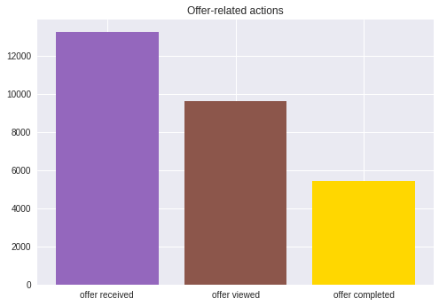
offer_actions
| person | event | time | offer_id | duration_hours | |
|---|---|---|---|---|---|
| 2 | 78afa995795e4d85b5d9ceeca43f5fef | offer received | 0 | 9b98b8c7a33c4b65b9aebfe6a799e6d9 | 168 |
| 3 | 78afa995795e4d85b5d9ceeca43f5fef | offer viewed | 6 | 9b98b8c7a33c4b65b9aebfe6a799e6d9 | 168 |
| 4 | 78afa995795e4d85b5d9ceeca43f5fef | offer completed | 132 | 9b98b8c7a33c4b65b9aebfe6a799e6d9 | 168 |
| 16 | a448667f336b42c9a66fc5ffd5d73772 | offer received | 0 | 9b98b8c7a33c4b65b9aebfe6a799e6d9 | 168 |
| 22 | ebe7ef46ea6f4963a7dd49f501b26779 | offer received | 0 | 9b98b8c7a33c4b65b9aebfe6a799e6d9 | 168 |
| ... | ... | ... | ... | ... | ... |
| 148792 | 122c0c2a3c2540848f8c3fdc37e97639 | offer received | 0 | 4d5c57ea9a6940dd891ad53e9dbe8da0 | 120 |
| 148793 | 122c0c2a3c2540848f8c3fdc37e97639 | offer viewed | 6 | 4d5c57ea9a6940dd891ad53e9dbe8da0 | 120 |
| 148794 | 122c0c2a3c2540848f8c3fdc37e97639 | offer completed | 36 | 4d5c57ea9a6940dd891ad53e9dbe8da0 | 120 |
| 148798 | ff737c250d2343729ade04c4f6eb1001 | offer received | 0 | 4d5c57ea9a6940dd891ad53e9dbe8da0 | 120 |
| 148799 | ff737c250d2343729ade04c4f6eb1001 | offer viewed | 96 | 4d5c57ea9a6940dd891ad53e9dbe8da0 | 120 |
28297 rows × 5 columns
#we need to see if the same offer can be made to the same person more than
#in order to check that, we group by person, offer_id and type of offer
expl_num_offers = pd.DataFrame(offer_actions.groupby(["person", "offer_id", "event"]).size())
expl_num_offers.columns = ["times"]
expl_num_offers
| times | |||
|---|---|---|---|
| person | offer_id | event | |
| 0011e0d4e6b944f998e987f904e8c1e5 | 3f207df678b143eea3cee63160fa8bed | offer received | 1 |
| offer viewed | 1 | ||
| 0020c2b971eb4e9188eac86d93036a77 | fafdcd668e3743c1bb461111dcafc2a4 | offer completed | 1 |
| offer received | 1 | ||
| offer viewed | 1 | ||
| ... | ... | ... | ... |
| ffff82501cea40309d5fdd7edcca4a07 | 0b1e1539f2cc45b7b9fa7c272da2e1d7 | offer received | 1 |
| offer viewed | 1 | ||
| fafdcd668e3743c1bb461111dcafc2a4 | offer completed | 1 | |
| offer received | 1 | ||
| offer viewed | 1 |
28010 rows × 1 columns
#checking number and percentage of times users received an offer
idx = pd.IndexSlice
expl_num_offers.loc[idx[:,:,"offer received"],"times"].value_counts()
1 12917
2 158
Name: times, dtype: int64
expl_num_offers.loc[idx[:,:,"offer received"],"times"].value_counts() / expl_num_offers.loc[idx[:,:,"offer received"],"times"].sum()
1 0.97612
2 0.01194
Name: times, dtype: float64
#checking number and percentage of times users completed an offer
expl_num_offers.loc[idx[:,:,"offer completed"],"times"].value_counts()
1 5327
2 52
Name: times, dtype: int64
expl_num_offers.loc[idx[:,:,"offer completed"],"times"].value_counts() / expl_num_offers.loc[idx[:,:,"offer completed"],"times"].sum()
1 0.980851
2 0.009575
Name: times, dtype: float64
#checking number and percentage of times users viewed an offer
expl_num_offers.loc[idx[:,:,"offer viewed"],"times"].value_counts()
1 9479
2 77
Name: times, dtype: int64
expl_num_offers.loc[idx[:,:,"offer viewed"],"times"].value_counts() / expl_num_offers.loc[idx[:,:,"offer viewed"],"times"].sum()
1 0.984013
2 0.007993
Name: times, dtype: float64
Observation: In 98% of cases, a user can receive, view and complete only one offer per one campaign. It may be useful to drop other cases, as they may be technical errors.
#filterring out all cases when a user received, viewed or completed a campaign twice
expl_num_offers = expl_num_offers.loc[expl_num_offers.times < 2]
expl_num_offers
| times | |||
|---|---|---|---|
| person | offer_id | event | |
| 0011e0d4e6b944f998e987f904e8c1e5 | 3f207df678b143eea3cee63160fa8bed | offer received | 1 |
| offer viewed | 1 | ||
| 0020c2b971eb4e9188eac86d93036a77 | fafdcd668e3743c1bb461111dcafc2a4 | offer completed | 1 |
| offer received | 1 | ||
| offer viewed | 1 | ||
| ... | ... | ... | ... |
| ffff82501cea40309d5fdd7edcca4a07 | 0b1e1539f2cc45b7b9fa7c272da2e1d7 | offer received | 1 |
| offer viewed | 1 | ||
| fafdcd668e3743c1bb461111dcafc2a4 | offer completed | 1 | |
| offer received | 1 | ||
| offer viewed | 1 |
27723 rows × 1 columns
#in order to reflect it in our offer actions dataframe, we merge exploratory dataframe and offer actions dataframe
filtered_offer_actions = pd.merge(expl_num_offers, offer_actions, how = 'left', on = ["person", "offer_id","event"])
filtered_offer_actions =filtered_offer_actions.drop("times", axis = 1)
#final offer actions dataframe
filtered_offer_actions
| person | offer_id | event | time | duration_hours | |
|---|---|---|---|---|---|
| 0 | 0011e0d4e6b944f998e987f904e8c1e5 | 3f207df678b143eea3cee63160fa8bed | offer received | 0 | 96 |
| 1 | 0011e0d4e6b944f998e987f904e8c1e5 | 3f207df678b143eea3cee63160fa8bed | offer viewed | 6 | 96 |
| 2 | 0020c2b971eb4e9188eac86d93036a77 | fafdcd668e3743c1bb461111dcafc2a4 | offer completed | 54 | 240 |
| 3 | 0020c2b971eb4e9188eac86d93036a77 | fafdcd668e3743c1bb461111dcafc2a4 | offer received | 0 | 240 |
| 4 | 0020c2b971eb4e9188eac86d93036a77 | fafdcd668e3743c1bb461111dcafc2a4 | offer viewed | 12 | 240 |
| ... | ... | ... | ... | ... | ... |
| 27718 | ffff82501cea40309d5fdd7edcca4a07 | 0b1e1539f2cc45b7b9fa7c272da2e1d7 | offer received | 168 | 240 |
| 27719 | ffff82501cea40309d5fdd7edcca4a07 | 0b1e1539f2cc45b7b9fa7c272da2e1d7 | offer viewed | 174 | 240 |
| 27720 | ffff82501cea40309d5fdd7edcca4a07 | fafdcd668e3743c1bb461111dcafc2a4 | offer completed | 60 | 240 |
| 27721 | ffff82501cea40309d5fdd7edcca4a07 | fafdcd668e3743c1bb461111dcafc2a4 | offer received | 0 | 240 |
| 27722 | ffff82501cea40309d5fdd7edcca4a07 | fafdcd668e3743c1bb461111dcafc2a4 | offer viewed | 6 | 240 |
27723 rows × 5 columns
#now it is safe to see how many campaigns each user participated in
filtered_offer_actions.groupby("person").count()["offer_id"].value_counts()
2 4381
3 4127
1 2016
4 524
5 280
6 178
Name: offer_id, dtype: int64
n_offer_proportion = filtered_offer_actions.groupby("person").count()["offer_id"].value_counts() / filtered_offer_actions.person.unique().shape[0]
n_offer_proportion = n_offer_proportion.values
n_offer_proportion
array([0.38075787, 0.35868243, 0.17521293, 0.04554146, 0.02433513,
0.01547019])
ax = plt.subplot()
ax.bar(filtered_offer_actions.groupby("person").count()["offer_id"].value_counts().index,
filtered_offer_actions.groupby("person").count()["offer_id"].value_counts().values,
color = my_colors[:6])
for n, patch in enumerate(ax.patches):
ax.text(patch.get_x()+0.2, patch.get_height()+ 60, str(round(n_offer_proportion[n]*100, 2))+"%",
fontsize = 10, color = 'dimgrey')
plt.title("Number of offers assigned");
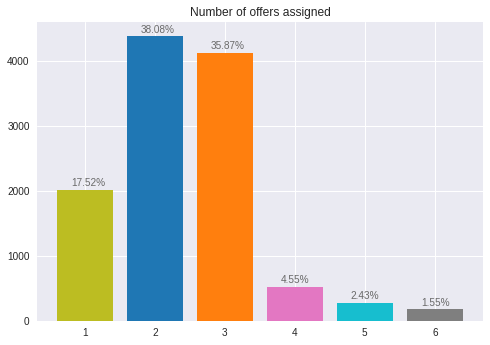
Observation: We can see that more than 80% of users were assigned more than one campaign. It could be interesting to see if being assigned more campaigns leads to more purchases (during and after the campaign) and more completed campaigns.
#next, we need to distinguish between the transactions conducted during the offer
#and transactions conducted after the offer has finished
#as 80% of users have been assigned multiple transactions and we do not have
#any information on when a transaction was conducted, we will use
#the longest number of hours an offer lasts (240 hours) as a proxy for
#offer-related transactions
#filtering out users not in the filtered_offer_actions and therefore likely to have been assigned an offer
#different from the ones listed in the portfolio.json dataset
transactions = transactions[transactions.person.isin(filtered_offer_actions.person)].copy()
transactions["offer_related"] = transactions.time.apply(lambda x: 1 if x <= 240 else 0)
#number and proportion of offer-related transactions
print("Related: ", transactions.offer_related.sum())
print("Non-related: ", transactions.loc[transactions.offer_related == 0].shape[0])
Related: 30923
Non-related: 67986
#plotting the proportion of transactions
to_plot = {}
to_plot["Related"] = transactions.offer_related.sum()
to_plot["Non-related"] = transactions.loc[transactions.offer_related == 0].shape[0]
plt.pie(list(to_plot.values()), colors = my_colors[0:2], autopct="%1.1f%%")
my_circle=plt.Circle( (0,0), 0.7, color='white')
fig=plt.gcf()
fig.gca().add_artist(my_circle)
plt.legend(labels = list(to_plot.keys()))
plt.title("Proportion of transactions by relation to offers");
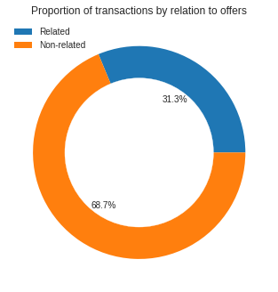
transactions
| person | time | amount | offer_related | |
|---|---|---|---|---|
| 8 | 78afa995795e4d85b5d9ceeca43f5fef | 132 | 19.89 | 1 |
| 10 | 78afa995795e4d85b5d9ceeca43f5fef | 144 | 17.78 | 1 |
| 13 | 78afa995795e4d85b5d9ceeca43f5fef | 222 | 19.67 | 1 |
| 14 | 78afa995795e4d85b5d9ceeca43f5fef | 240 | 29.72 | 1 |
| 15 | 78afa995795e4d85b5d9ceeca43f5fef | 378 | 23.93 | 0 |
| ... | ... | ... | ... | ... |
| 272752 | e4052622e5ba45a8b96b59aba68cf068 | 84 | 25.19 | 1 |
| 272753 | e4052622e5ba45a8b96b59aba68cf068 | 96 | 21.53 | 1 |
| 272756 | e4052622e5ba45a8b96b59aba68cf068 | 480 | 30.57 | 0 |
| 272758 | e4052622e5ba45a8b96b59aba68cf068 | 486 | 19.47 | 0 |
| 272761 | e4052622e5ba45a8b96b59aba68cf068 | 690 | 24.71 | 0 |
98909 rows × 4 columns
Questions to answer
In the process of cleaning the data, I discovered that one user can be assigned one or more offers. This feature of the dataset gives me a chance to explore if Starbucks' customers are prone to "deals fatigue". We can also assume that for the different social groups results can be different. In this case study we will focus on gender. This leads us to the two following questions:
- Q1: Does the higher number of transactions offered affect the number/amount of purchases? What if controlled for the time of joining?
- Q2: Are there differences by gender?
Correspondingly, to answer these questions we will need a dataset based on users table, with additional information for each user regarding the number of campaigns offered, the number of offers viewed and completed, the number of offer-related and non-offer-related transactions, money spent during and between offers, as well as total money spent.
#checking the number of offer/non-offer related transactions by person
offer_trans = transactions.groupby(["person", "offer_related"]).size().unstack()
offer_trans.columns = ["non_off_related_trans", "off_related_trans"]
offer_trans
| non_off_related_trans | off_related_trans | |
|---|---|---|
| person | ||
| 0011e0d4e6b944f998e987f904e8c1e5 | 4.0 | 1.0 |
| 0020c2b971eb4e9188eac86d93036a77 | 4.0 | 4.0 |
| 003d66b6608740288d6cc97a6903f4f0 | 15.0 | 3.0 |
| 00426fe3ffde4c6b9cb9ad6d077a13ea | 8.0 | 9.0 |
| 004c5799adbf42868b9cff0396190900 | 10.0 | 2.0 |
| ... | ... | ... |
| fff29fb549084123bd046dbc5ceb4faa | 7.0 | 4.0 |
| fff3ba4757bd42088c044ca26d73817a | 4.0 | 7.0 |
| fff7576017104bcc8677a8d63322b5e1 | 4.0 | 2.0 |
| fffad4f4828548d1b5583907f2e9906b | 7.0 | 5.0 |
| ffff82501cea40309d5fdd7edcca4a07 | 9.0 | 6.0 |
11240 rows × 2 columns
#reseting index before joining
offer_trans.reset_index(inplace = True)
offer_trans
| person | non_off_related_trans | off_related_trans | |
|---|---|---|---|
| 0 | 0011e0d4e6b944f998e987f904e8c1e5 | 4.0 | 1.0 |
| 1 | 0020c2b971eb4e9188eac86d93036a77 | 4.0 | 4.0 |
| 2 | 003d66b6608740288d6cc97a6903f4f0 | 15.0 | 3.0 |
| 3 | 00426fe3ffde4c6b9cb9ad6d077a13ea | 8.0 | 9.0 |
| 4 | 004c5799adbf42868b9cff0396190900 | 10.0 | 2.0 |
| ... | ... | ... | ... |
| 11235 | fff29fb549084123bd046dbc5ceb4faa | 7.0 | 4.0 |
| 11236 | fff3ba4757bd42088c044ca26d73817a | 4.0 | 7.0 |
| 11237 | fff7576017104bcc8677a8d63322b5e1 | 4.0 | 2.0 |
| 11238 | fffad4f4828548d1b5583907f2e9906b | 7.0 | 5.0 |
| 11239 | ffff82501cea40309d5fdd7edcca4a07 | 9.0 | 6.0 |
11240 rows × 3 columns
#merging users dataframe with transaction number dataframe by user
merged_user_trans = pd.merge(df_users, offer_trans, how = 'left', left_on = df_users.id,
right_on = offer_trans.person)
merged_user_trans = merged_user_trans.drop(['key_0', 'person'], axis=1)
merged_user_trans
| gender | age | id | became_member_on | income | agegroup | became_member_dt | non_off_related_trans | off_related_trans | |
|---|---|---|---|---|---|---|---|---|---|
| 0 | F | 55 | 0610b486422d4921ae7d2bf64640c50b | 20170715 | 112000.0 | (50, 60] | 2017-07-15 | NaN | NaN |
| 1 | F | 75 | 78afa995795e4d85b5d9ceeca43f5fef | 20170509 | 100000.0 | (70, 80] | 2017-05-09 | 3.0 | 4.0 |
| 2 | M | 68 | e2127556f4f64592b11af22de27a7932 | 20180426 | 70000.0 | (60, 70] | 2018-04-26 | 3.0 | NaN |
| 3 | M | 65 | 389bc3fa690240e798340f5a15918d5c | 20180209 | 53000.0 | (60, 70] | 2018-02-09 | 2.0 | 1.0 |
| 4 | M | 58 | 2eeac8d8feae4a8cad5a6af0499a211d | 20171111 | 51000.0 | (50, 60] | 2017-11-11 | 3.0 | 1.0 |
| ... | ... | ... | ... | ... | ... | ... | ... | ... | ... |
| 14820 | F | 45 | 6d5f3a774f3d4714ab0c092238f3a1d7 | 20180604 | 54000.0 | (40, 50] | 2018-06-04 | NaN | NaN |
| 14821 | M | 61 | 2cb4f97358b841b9a9773a7aa05a9d77 | 20180713 | 72000.0 | (60, 70] | 2018-07-13 | 6.0 | 1.0 |
| 14822 | M | 49 | 01d26f638c274aa0b965d24cefe3183f | 20170126 | 73000.0 | (40, 50] | 2017-01-26 | 7.0 | 1.0 |
| 14823 | F | 83 | 9dc1421481194dcd9400aec7c9ae6366 | 20160307 | 50000.0 | (80, 90] | 2016-03-07 | NaN | NaN |
| 14824 | F | 62 | e4052622e5ba45a8b96b59aba68cf068 | 20170722 | 82000.0 | (60, 70] | 2017-07-22 | 3.0 | 3.0 |
14825 rows × 9 columns
#replacing the null values with zeros
merged_user_trans.off_related_trans.fillna(0, inplace = True)
merged_user_trans.non_off_related_trans.fillna(0, inplace = True)
#checking descriptive statistics regarding offer-related-transactions
merged_user_trans.off_related_trans.describe()
count 14825.000000
mean 2.085868
std 2.375044
min 0.000000
25% 0.000000
50% 1.000000
75% 3.000000
max 16.000000
Name: off_related_trans, dtype: float64
#checking descriptive statistics regarding non-offer-related-transactions
merged_user_trans.non_off_related_trans.describe()
count 14825.000000
mean 4.585902
std 4.171664
min 0.000000
25% 1.000000
50% 4.000000
75% 7.000000
max 31.000000
Name: non_off_related_trans, dtype: float64
sns.boxplot(x = ["Related","Non-related"], y = [merged_user_trans.off_related_trans,
merged_user_trans.non_off_related_trans],
palette = sns.color_palette(my_colors[3:5])).set_title("Offer related and non-related transactions");
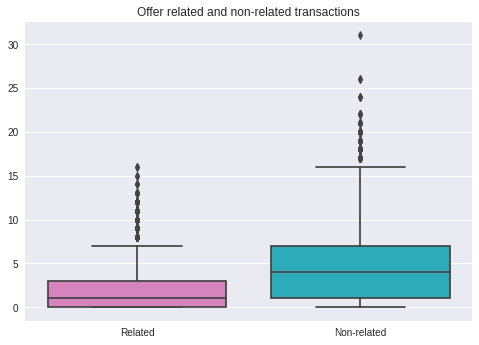
#checking users who did not conduct any offer-related or non-offer related transactions
no_trans = merged_user_trans.loc[(merged_user_trans.off_related_trans == 0) &
(merged_user_trans.non_off_related_trans ==0)].shape[0]
print("People with no transactions:", no_trans, "or",
f"{no_trans/merged_user_trans.shape[0]:.2f}%")
People with no transactions: 3585 or 0.24%
no_trans = merged_user_trans.loc[(merged_user_trans.off_related_trans == 0) &
(merged_user_trans.non_off_related_trans !=0)].shape[0]
print("People with only non-offer related transactions:", no_trans, "or",
f"{no_trans/merged_user_trans.shape[0]:.2f}%")
People with only non-offer related transactions: 1768 or 0.12%
no_trans = merged_user_trans.loc[(merged_user_trans.off_related_trans != 0) &
(merged_user_trans.non_off_related_trans ==0)].shape[0]
print("People with only offer-related transactions:", no_trans, "or",
f"{no_trans/merged_user_trans.shape[0]:.2f}%")
People with only offer-related transactions: 31 or 0.00%
Observation: even though non-offer related transactions outnumber offer-related transactions, overwhelming majority of people in the dataset conducted some offer-related transactions
#next, we will check how much money users spent on offer-related and non-offer-
#related transactions
sum_tr_offer = transactions.groupby(["person", "offer_related"]).sum().amount.unstack()
sum_tr_offer.columns = ["spent_non_offer_related", "spent_offer_related"]
sum_tr_offer.reset_index(inplace = True)
sum_tr_offer
| person | spent_non_offer_related | spent_offer_related | |
|---|---|---|---|
| 0 | 0011e0d4e6b944f998e987f904e8c1e5 | 65.97 | 13.49 |
| 1 | 0020c2b971eb4e9188eac86d93036a77 | 98.53 | 98.33 |
| 2 | 003d66b6608740288d6cc97a6903f4f0 | 44.35 | 3.99 |
| 3 | 00426fe3ffde4c6b9cb9ad6d077a13ea | 31.22 | 37.29 |
| 4 | 004c5799adbf42868b9cff0396190900 | 275.88 | 71.50 |
| ... | ... | ... | ... |
| 11235 | fff29fb549084123bd046dbc5ceb4faa | 190.42 | 101.05 |
| 11236 | fff3ba4757bd42088c044ca26d73817a | 447.59 | 133.39 |
| 11237 | fff7576017104bcc8677a8d63322b5e1 | 18.40 | 11.54 |
| 11238 | fffad4f4828548d1b5583907f2e9906b | 56.58 | 32.25 |
| 11239 | ffff82501cea40309d5fdd7edcca4a07 | 137.52 | 88.55 |
11240 rows × 3 columns
#we will add this information to our user dataframe
merged_user_sum = pd.merge(merged_user_trans, sum_tr_offer, how = 'left', left_on = merged_user_trans.id,
right_on = sum_tr_offer.person)
merged_user_sum = merged_user_sum.drop(['key_0', 'person'], axis=1)
merged_user_sum
| gender | age | id | became_member_on | income | agegroup | became_member_dt | non_off_related_trans | off_related_trans | spent_non_offer_related | spent_offer_related | |
|---|---|---|---|---|---|---|---|---|---|---|---|
| 0 | F | 55 | 0610b486422d4921ae7d2bf64640c50b | 20170715 | 112000.0 | (50, 60] | 2017-07-15 | 0.0 | 0.0 | NaN | NaN |
| 1 | F | 75 | 78afa995795e4d85b5d9ceeca43f5fef | 20170509 | 100000.0 | (70, 80] | 2017-05-09 | 3.0 | 4.0 | 72.21 | 87.06 |
| 2 | M | 68 | e2127556f4f64592b11af22de27a7932 | 20180426 | 70000.0 | (60, 70] | 2018-04-26 | 3.0 | 0.0 | 57.73 | NaN |
| 3 | M | 65 | 389bc3fa690240e798340f5a15918d5c | 20180209 | 53000.0 | (60, 70] | 2018-02-09 | 2.0 | 1.0 | 26.89 | 9.54 |
| 4 | M | 58 | 2eeac8d8feae4a8cad5a6af0499a211d | 20171111 | 51000.0 | (50, 60] | 2017-11-11 | 3.0 | 1.0 | 13.30 | 2.32 |
| ... | ... | ... | ... | ... | ... | ... | ... | ... | ... | ... | ... |
| 14820 | F | 45 | 6d5f3a774f3d4714ab0c092238f3a1d7 | 20180604 | 54000.0 | (40, 50] | 2018-06-04 | 0.0 | 0.0 | NaN | NaN |
| 14821 | M | 61 | 2cb4f97358b841b9a9773a7aa05a9d77 | 20180713 | 72000.0 | (60, 70] | 2018-07-13 | 6.0 | 1.0 | 23.04 | 2.93 |
| 14822 | M | 49 | 01d26f638c274aa0b965d24cefe3183f | 20170126 | 73000.0 | (40, 50] | 2017-01-26 | 7.0 | 1.0 | 36.44 | 3.30 |
| 14823 | F | 83 | 9dc1421481194dcd9400aec7c9ae6366 | 20160307 | 50000.0 | (80, 90] | 2016-03-07 | 0.0 | 0.0 | NaN | NaN |
| 14824 | F | 62 | e4052622e5ba45a8b96b59aba68cf068 | 20170722 | 82000.0 | (60, 70] | 2017-07-22 | 3.0 | 3.0 | 74.75 | 68.27 |
14825 rows × 11 columns
#replacing null values in newly added columns with zeros
merged_user_sum.spent_non_offer_related.fillna(0, inplace = True)
merged_user_sum.spent_offer_related.fillna(0, inplace = True)
merged_user_sum
| gender | age | id | became_member_on | income | agegroup | became_member_dt | non_off_related_trans | off_related_trans | spent_non_offer_related | spent_offer_related | |
|---|---|---|---|---|---|---|---|---|---|---|---|
| 0 | F | 55 | 0610b486422d4921ae7d2bf64640c50b | 20170715 | 112000.0 | (50, 60] | 2017-07-15 | 0.0 | 0.0 | 0.00 | 0.00 |
| 1 | F | 75 | 78afa995795e4d85b5d9ceeca43f5fef | 20170509 | 100000.0 | (70, 80] | 2017-05-09 | 3.0 | 4.0 | 72.21 | 87.06 |
| 2 | M | 68 | e2127556f4f64592b11af22de27a7932 | 20180426 | 70000.0 | (60, 70] | 2018-04-26 | 3.0 | 0.0 | 57.73 | 0.00 |
| 3 | M | 65 | 389bc3fa690240e798340f5a15918d5c | 20180209 | 53000.0 | (60, 70] | 2018-02-09 | 2.0 | 1.0 | 26.89 | 9.54 |
| 4 | M | 58 | 2eeac8d8feae4a8cad5a6af0499a211d | 20171111 | 51000.0 | (50, 60] | 2017-11-11 | 3.0 | 1.0 | 13.30 | 2.32 |
| ... | ... | ... | ... | ... | ... | ... | ... | ... | ... | ... | ... |
| 14820 | F | 45 | 6d5f3a774f3d4714ab0c092238f3a1d7 | 20180604 | 54000.0 | (40, 50] | 2018-06-04 | 0.0 | 0.0 | 0.00 | 0.00 |
| 14821 | M | 61 | 2cb4f97358b841b9a9773a7aa05a9d77 | 20180713 | 72000.0 | (60, 70] | 2018-07-13 | 6.0 | 1.0 | 23.04 | 2.93 |
| 14822 | M | 49 | 01d26f638c274aa0b965d24cefe3183f | 20170126 | 73000.0 | (40, 50] | 2017-01-26 | 7.0 | 1.0 | 36.44 | 3.30 |
| 14823 | F | 83 | 9dc1421481194dcd9400aec7c9ae6366 | 20160307 | 50000.0 | (80, 90] | 2016-03-07 | 0.0 | 0.0 | 0.00 | 0.00 |
| 14824 | F | 62 | e4052622e5ba45a8b96b59aba68cf068 | 20170722 | 82000.0 | (60, 70] | 2017-07-22 | 3.0 | 3.0 | 74.75 | 68.27 |
14825 rows × 11 columns
sns.boxplot(x = ["Related","Non-related"], y = [merged_user_sum.spent_offer_related,
merged_user_sum.spent_non_offer_related],
palette = sns.color_palette(my_colors[7:9])).set_title("Money spent, offer related and non-related");
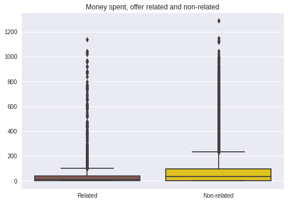
merged_user_sum.spent_offer_related.describe()
count 14825.000000
mean 28.791158
std 56.475480
min 0.000000
25% 0.000000
50% 10.680000
75% 40.970000
max 1136.200000
Name: spent_offer_related, dtype: float64
merged_user_sum.spent_non_offer_related.describe()
count 14825.000000
mean 64.295125
std 95.986697
min 0.000000
25% 2.090000
50% 34.780000
75% 95.000000
max 1287.250000
Name: spent_non_offer_related, dtype: float64
Observation: We see that in terms of sum of money spent on both offer-related and non-offer-related transactions, there are outliers that are skewing the distribution to the right. Before proceeding with further analysis, we need to handle the outliers. We will do that through only using the data between 85 and 15% quantile.
#filtering out outliers for non-offer-related and offer-related sum
merged_user_sum_no_outl = merged_user_sum.loc[\
merged_user_sum.spent_non_offer_related.between\
(merged_user_sum.spent_non_offer_related.quantile(.15),
merged_user_sum.spent_non_offer_related.quantile(.85))]
merged_user_sum_no_outl = merged_user_sum_no_outl.loc[\
merged_user_sum_no_outl.spent_offer_related.between\
(merged_user_sum_no_outl.spent_offer_related.quantile(.15),
merged_user_sum_no_outl.spent_offer_related.quantile(.85))]
#checking the number of users left out
merged_user_sum.shape[0] - merged_user_sum_no_outl.shape[0]
4113
sns.boxplot(x = ["Related","Non-related"], y = [merged_user_sum_no_outl.spent_offer_related,
merged_user_sum_no_outl.spent_non_offer_related],
palette = sns.color_palette(my_colors[7:9])).set_title("Money spent, offer related and non-related (outliers dropped)");
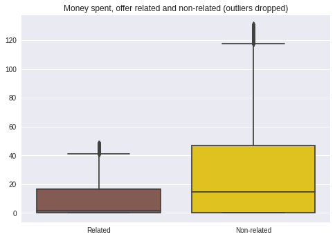
merged_user_sum_no_outl.spent_offer_related.describe()
count 10712.000000
mean 9.484548
std 13.111000
min 0.000000
25% 0.000000
50% 1.340000
75% 16.432500
max 48.360000
Name: spent_offer_related, dtype: float64
merged_user_sum_no_outl.spent_non_offer_related.describe()
count 10712.000000
mean 29.016984
std 34.840995
min 0.000000
25% 0.000000
50% 14.675000
75% 47.007500
max 130.870000
Name: spent_non_offer_related, dtype: float64
The distribution of sums is looking much better! Now we can add the columns related to offers users were assigned to, viewed and completed.
#creating a dataframe with number of received, viewed and completed offers by user
offers_by_user = filtered_offer_actions.groupby(["person", "event"]).count()["offer_id"].unstack()
offers_by_user.columns = ["offers_completed", "offers_received", "offers_viewed"]
offers_by_user.reset_index(inplace = True)
offers_by_user
| person | offers_completed | offers_received | offers_viewed | |
|---|---|---|---|---|
| 0 | 0011e0d4e6b944f998e987f904e8c1e5 | NaN | 1.0 | 1.0 |
| 1 | 0020c2b971eb4e9188eac86d93036a77 | 1.0 | 1.0 | 1.0 |
| 2 | 003d66b6608740288d6cc97a6903f4f0 | NaN | 2.0 | 1.0 |
| 3 | 00426fe3ffde4c6b9cb9ad6d077a13ea | NaN | 2.0 | 2.0 |
| 4 | 004c5799adbf42868b9cff0396190900 | 1.0 | 1.0 | 1.0 |
| ... | ... | ... | ... | ... |
| 11501 | fff29fb549084123bd046dbc5ceb4faa | 1.0 | 2.0 | 1.0 |
| 11502 | fff3ba4757bd42088c044ca26d73817a | 1.0 | 1.0 | 1.0 |
| 11503 | fff7576017104bcc8677a8d63322b5e1 | 1.0 | 1.0 | 1.0 |
| 11504 | fffad4f4828548d1b5583907f2e9906b | 1.0 | 1.0 | 1.0 |
| 11505 | ffff82501cea40309d5fdd7edcca4a07 | 2.0 | 2.0 | 2.0 |
11506 rows × 4 columns
#adding the information about number of offers to the dataframe with users/transactions info
#we need only users who were assigned offers, so we perform an inner join
final = pd.merge(merged_user_sum_no_outl, offers_by_user, how = 'inner',
left_on = merged_user_sum_no_outl.id, right_on = offers_by_user.person)
final = final.drop(["key_0", "person", "became_member_on"], axis = 1)
#replacing null values with zeros
final.offers_completed.fillna(0, inplace = True)
final.offers_received.fillna(0, inplace = True)
final.offers_viewed.fillna(0, inplace = True)
final
| gender | age | id | income | agegroup | became_member_dt | non_off_related_trans | off_related_trans | spent_non_offer_related | spent_offer_related | offers_completed | offers_received | offers_viewed | |
|---|---|---|---|---|---|---|---|---|---|---|---|---|---|
| 0 | M | 68 | e2127556f4f64592b11af22de27a7932 | 70000.0 | (60, 70] | 2018-04-26 | 3.0 | 0.0 | 57.73 | 0.00 | 0.0 | 1.0 | 1.0 |
| 1 | M | 65 | 389bc3fa690240e798340f5a15918d5c | 53000.0 | (60, 70] | 2018-02-09 | 2.0 | 1.0 | 26.89 | 9.54 | 1.0 | 1.0 | 1.0 |
| 2 | M | 58 | 2eeac8d8feae4a8cad5a6af0499a211d | 51000.0 | (50, 60] | 2017-11-11 | 3.0 | 1.0 | 13.30 | 2.32 | 0.0 | 1.0 | 0.0 |
| 3 | F | 61 | aa4862eba776480b8bb9c68455b8c2e1 | 57000.0 | (60, 70] | 2017-09-11 | 5.0 | 1.0 | 73.22 | 12.33 | 0.0 | 1.0 | 1.0 |
| 4 | M | 26 | e12aeaf2d47d42479ea1c4ac3d8286c6 | 46000.0 | (18, 30] | 2014-02-13 | 8.0 | 3.0 | 42.12 | 14.10 | 0.0 | 1.0 | 0.0 |
| ... | ... | ... | ... | ... | ... | ... | ... | ... | ... | ... | ... | ... | ... |
| 7388 | F | 59 | bf3069b178fe40d789dd027901bc406b | 63000.0 | (50, 60] | 2017-07-31 | 4.0 | 0.0 | 75.16 | 0.00 | 0.0 | 2.0 | 2.0 |
| 7389 | M | 64 | f653cf2d8bba42d0a53c2937ee2e5893 | 51000.0 | (60, 70] | 2018-01-04 | 5.0 | 4.0 | 19.48 | 12.96 | 1.0 | 1.0 | 1.0 |
| 7390 | F | 21 | 400d0536e8794cbb855b0d882d67cbda | 72000.0 | (18, 30] | 2017-09-17 | 4.0 | 2.0 | 7.25 | 10.62 | 0.0 | 1.0 | 1.0 |
| 7391 | M | 61 | 2cb4f97358b841b9a9773a7aa05a9d77 | 72000.0 | (60, 70] | 2018-07-13 | 6.0 | 1.0 | 23.04 | 2.93 | 0.0 | 1.0 | 1.0 |
| 7392 | M | 49 | 01d26f638c274aa0b965d24cefe3183f | 73000.0 | (40, 50] | 2017-01-26 | 7.0 | 1.0 | 36.44 | 3.30 | 0.0 | 1.0 | 0.0 |
7393 rows × 13 columns
#visualizing the newly added columns
sns.boxplot(x = ["Received","Viewed", "Completed"],
y = [final.offers_received,
final.offers_viewed,
final.offers_completed],
palette = sns.color_palette(my_colors[4:7]))\
.set_title("Offer-related actions");
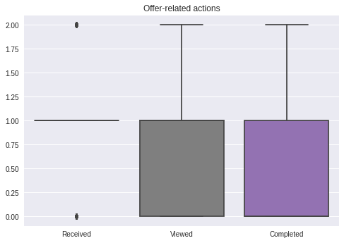
final.offers_received.describe()
count 7393.000000
mean 1.120790
std 0.340521
min 0.000000
25% 1.000000
50% 1.000000
75% 1.000000
max 2.000000
Name: offers_received, dtype: float64
final.offers_viewed.describe()
count 7393.000000
mean 0.774381
std 0.519072
min 0.000000
25% 0.000000
50% 1.000000
75% 1.000000
max 2.000000
Name: offers_viewed, dtype: float64
final.offers_completed.describe()
count 7393.000000
mean 0.277830
std 0.458997
min 0.000000
25% 0.000000
50% 0.000000
75% 1.000000
max 2.000000
Name: offers_completed, dtype: float64
It appears that even though in the events table there was a considerable amount of users who were assigned more than one offer, in the users table only about a half of users were assigned any offers and if they were, they were predominantly assigned only one. Therefore, it would make sense to filter out the users assigned more than one offer and reconsider the questions we wanted to answer.
#filtering out users with more than one offer
final = final.loc[final.offers_received == 1]
final.shape
(6428, 13)
#visualizing the offer-related metrics
print(final.offers_viewed.sum())
print(final.offers_completed.sum())
4537.0
1696.0
#checking how many users viewed and completed an offer after receiving one
completion_df = pd.DataFrame(final.groupby(['offers_viewed', 'offers_completed']).count().id)
completion_df
| id | ||
|---|---|---|
| offers_viewed | offers_completed | |
| 0.0 | 0.0 | 1639 |
| 1.0 | 252 | |
| 1.0 | 0.0 | 3093 |
| 1.0 | 1444 |
print(completion_df.iloc[[0,2], 0].values)
not_completed = completion_df.iloc[[0,2], 0].values / final.shape[0]
[1639 3093]
print(completion_df.iloc[[1,3], 0].values)
completed = completion_df.iloc[[1,3], 0].values / final.shape[0]
completed
[ 252 1444]
array([0.03920348, 0.22464219])
#visualizing results
p1 = plt.subplot()
p1.bar(["Not viewed", "Viewed"], (completion_df.iloc[[0,2], 0].values - completion_df.iloc[[1,3],0].values), color = my_colors[5])
for n, patch in enumerate(p1.patches):
p1.text(patch.get_x() + 0.32, patch.get_height() / 2, str(round(not_completed[n]*100, 2))+"%",
fontsize = 12, color = 'white', label = "Not completed")
p2 = plt.bar(["Not viewed","Viewed"], completion_df.iloc[[1,3],0].values,
bottom = completion_df.iloc[[0,2], 0].values - completion_df.iloc[[1,3],0].values, color = my_colors[1],
label = "Completed")
try:
for n, pa in enumerate(p1.patches):
p1.text(pa.get_x() + 0.32, pa.get_height() + 50, str(round(completed[n]*100, 2))+"%",
fontsize = 10, color = 'black')
except:
pass
plt.legend()
plt.title("Actions after having received an offer");
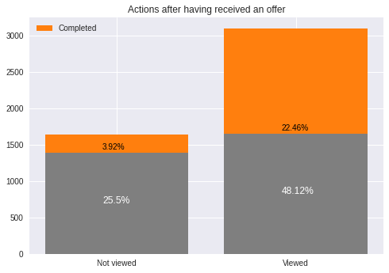
Observation: We can see that about 60% of users viewed the offer after being assigned one. However, less than a half completed an offer after vieweing it. While can't answer our initial research questions regarding "deals fatigue" with the data provided in the dataset, we can attempt profiling users who complete an offer after viewing it.
Question to answer (take 2)
Q: For the users who viewed an offer, what characteristic of the user is the best predictor for a user to complete that offer?
Conclusion
In this notebook, we attempted to clean and explore a dataset related to Starbucks' loyalty app. In this process, a question about possible "deal fatigue" emerged, as one of the tables indicated that most users have been assigned multiple offers. However, further wrangling of the data indicated that data about the completion of an offer contained only users who have been assigned one offer each. As a result, the question was reconsidered - as it became evident that only a half of users who view an offer, proceed on to complete it, it is necessary to identify main characteristics of users that lead them to complete an offer. This is the aim of the next stage of the project. Possible methods to answer that question include logistic regression aimed at predicting completion of an offer based on the user characteristics, and subsequent identification of feature importance.